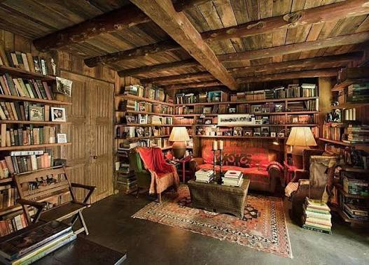
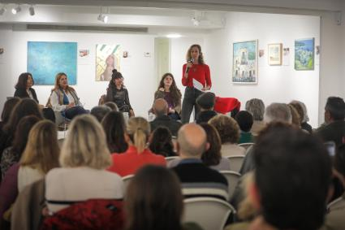
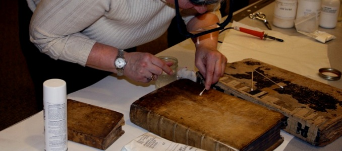
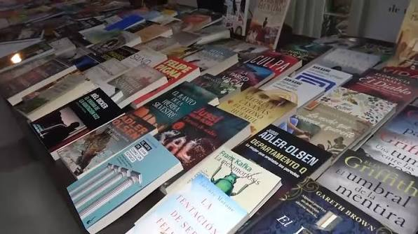
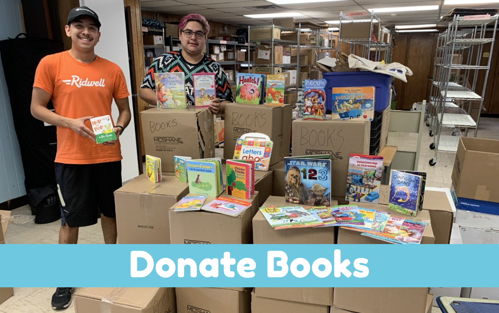

28 de Junio, 2026
Inauguración del Rincón del Investigador
Abrimos las puertas de nuestro espacio más íntimo: una sala rodeada de piedra diseñada para lecturas en silencio.
Registros oficiales, eventos y noticias literarias de nuestra orden de archivistas.

Abrimos las puertas de nuestro espacio más íntimo: una sala rodeada de piedra diseñada para lecturas en silencio.

El pasado fin de semana nos reunimos en el Gran Salón para recitar versos de Baudelaire y Lorca en una noche mágica.
Mejoramos nuestros protocolos de envío nacional. Ahora cada pergamino viaja sellado con cera y recubrimiento impermeable.

Exploramos los dilemas morales de Dostoyevski y los paisajes de Tolstói con descuentos especiales en toda la estantería.

Nuestro historiador de textos ha culminado la restauración manual de una edición de colección de las Rimas y Leyendas de 1871.
Abrimos la convocatoria oficial para nuestro club de debate mensual. Este mes analizaremos los secretos de la novela histórica.

Las sombras se ciernen sobre los anaqueles. Iniciamos un repaso analítico por las mejores tramas de intriga universal.

Gracias al aporte de nuestros fieles navegantes, logramos enviar cajones de literatura y poesía a escuelas rurales desfavorecidas.